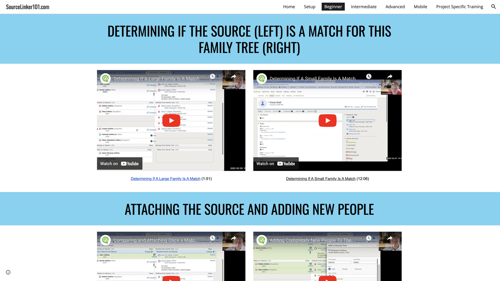

Contribute
The Dream
The ideal app would be based on a zion-model where we have many contributors volunteering their expertise to the world. I would like to have the training self-paced with all restrictions and stumbling blocks removed. It needs to be mobile first and desktop second. As a consultant, the bane of my existence is password recovery. I wish that we lived in a world where we didn’t even need passwords. So I would like to build this app with all training being open access. Some features like progress tracking will obviously need an authentication piece. But I don’t want any of the training to be hindered by a lost or forgotten password. I believe in building Zion right here and right now. I do not want to charge money or giveaway certain liberties to the whims of advertising. I want this to be ad free, password free, and hassle free.
Why I Think It Will Work
I created a video series to test out my theories on this method. It is proven to be quite successful in helping others learn how to link sources in FamilySearch. Genie Greenie now is the brainchild to take that trial run and apply it to the rest of the family history field.
How Do We Get There
My dream is daunting at best for a large army. I'm just myself. And I need your help! Do you have the skills to help program the apps? Do you have the funding to help recruit? Do you have the social connections to help advertise? More info to come.